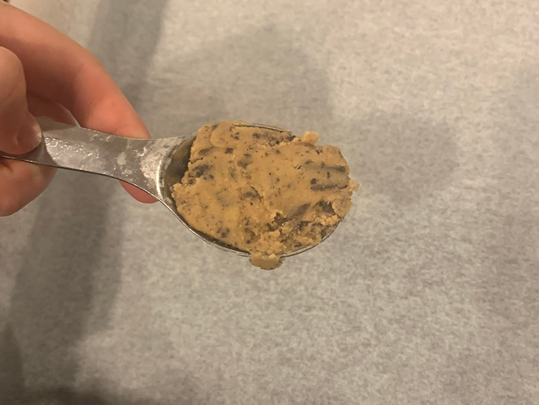
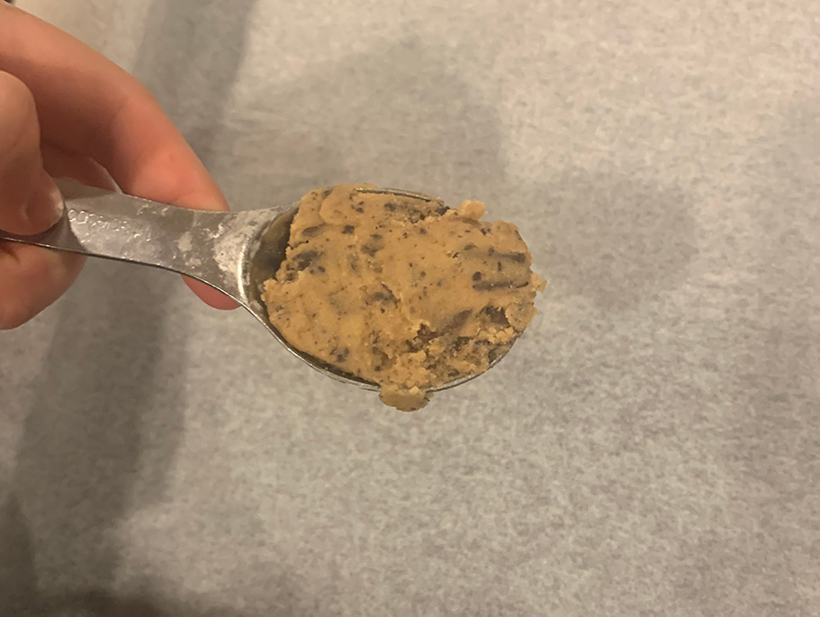

In 2013, I visited New York, and on that trip took a stop at the world famous Levain Bakery. I had a chocolate chip cookie and to this day, it has not been topped by any other.
I am going to be attempting to recreate these cookies by using a recipe I found online claiming to taste almost the exact same. I am excited to see if they will taste the same as the original and the differences between the two. Here you will find the step by step method and results!
The ingredients in this recipe are 115 grams unsalted butter, 190 grams brown sugar, 1 teaspoon vanilla extract, 1 large egg, 245 grams plain flour or all purpose flour, 1 tablespoon cornstarch, 1/2 teaspoon baking soda, Pinch of salt, optional, 225 grams dark chocolate, *optional* 50 grams of walnuts. Feel free to follow along at home! *Note* I chose to opt out of using walnuts as I am not a fan of their flavour

All the ingredients

Step 1: Heat the oven to 160 degrees Celsius

Step 2: Line a baking tray with baking paper

Step 3: Using a hand/stationary mixer, combine butter (cold) with brown sugar

Step 4: Once combined, add vanilla extract and egg; Be careful not to overmix!


Step 5: Add flour, cornstarch, baking soda and salt into the wet mixture and mix until soft dough forms


Step 6: Roughly chop chocolate and add to dough. Mix on low speed until combined
 

Step 7: Using 2 tablespoons per cookie, spoon dough onto baking tray


Step 8: Bake for 12-14 minutes until golden brown and serve warm :)